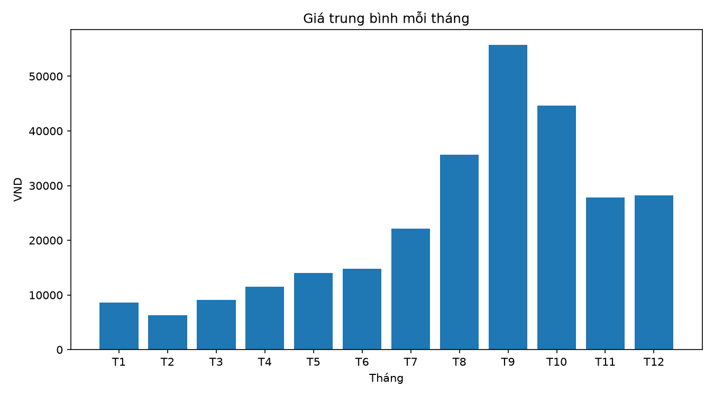
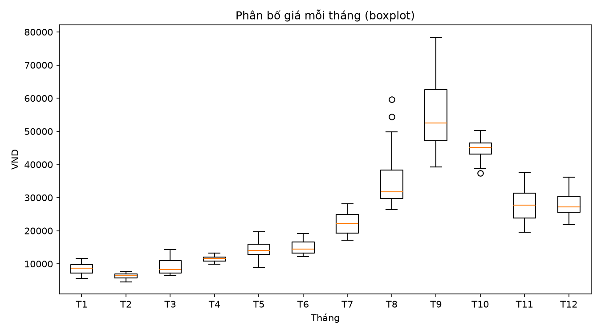
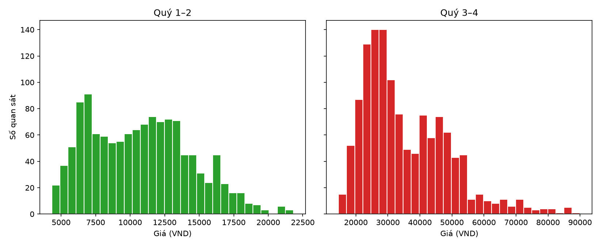

Video mô phỏng
Trên: nến Nhật theo ngày. Dưới: đường giá và dải biến động.
Tham chiếu
Sàn
Trần
Giảm
Tăng
Tổng quan cả năm
0Giá cao nhất (VND)
0Giá thấp nhất (VND)
Tháng 9Biến động mạnh nhất
0Biên độ ngày lớn nhất
Chọn một tháng để xem số liệu
Giá trung bình mỗi tháng

Boxplot giá mỗi tháng

Phân bố giá nửa đầu và nửa cuối năm
